Anaglyph Viewing Arrangements
By Oleg Kosyakovsky
Table of Contents
Please consider at least your red-cyan glasses before going ahead with HALD generation.
Inclusion of this section into Anahald description may sound odd, but the author must accentuate the importance of choosing your anaglyph glasses before continuing with Anahald.
That's because one cannot appreciate (and evaluate, and compare) anaglyph images viewed in glasses for which these images aren't meant.
What is viewing arrangement
Viewing arrangement is a term introduced by the author to describe all things to consider when viewing pictures of specific type. E.g. whatever (a) impacts the viewing experience and (b) could be tweaked to improve it.
In the case of anaglyphs, it includes glasses, image media (paper, screen), external illumination (light not coming from the image), distance between the viewer and the image, etc.
This page addresses the aspects where the author has anything to contribute.
Color filters in anaglyph glasses
First of all, the obvious thing is that the glasses must transfer the correct wavelength(s) and discard anything else. But in reality the filters are off to some degree, and one needs to ensure the error is reasonable.
A helpful resource to do so is David Romeuf's web page devoted to anaglyph glasses test.
It includes both the test-chart and a very deep technical explanation. As a minimum, checking the glasses versus his test-chart is a must.
Filter strength
Even the correct filter may leak some of the signal intended for the other eye, causing the problem usually called "ghosting". The spectator may or may not notice the problem, and the author's observation tells that it depends on the amount of disparity between left-eye and right-eye images in the specific anaglyph picture.
Anaglyph depth charts to demonstrate relation between filter strength and depth budget appear below in Table of depth-charts . The charts present combinations of coarser and finer depth resolution {"step"), as well as front- and rear position of the object image versus the screen ("3d_space").
- Notes:
- the small icons appearing inside the table aren't meant for depth-budget estimation; please view the linked images themselves
- in order for the pixel counts to be meaningful, charts need to be viewed at 1:1 (e.g. in "actual-size"/"real-pixels"/etc. mode)
- if your browser cannot guarantee it (Firefox and MS-Edge are such), download the image and open it in an appropriate viewer application on your computer
- if your browser cannot guarantee it (Firefox and MS-Edge are such), download the image and open it in an appropriate viewer application on your computer
- you can ignore pixel counts for qualitative-only comparison between different glasses - number of fusible lines is sufficient for that
- the small icons appearing inside the table aren't meant for depth-budget estimation; please view the linked images themselves
| Parameter | Value | Link to depth-chart image |
|---|---|---|
| parallax: 3d_space: ____step: | 0_to_50_pixels front_of_screen_ 5_pixels______ | 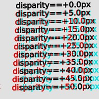 |
| parallax: 3d_space: ____step: | 0_to_50_pixels behind_screen_ 5_pixels______ | 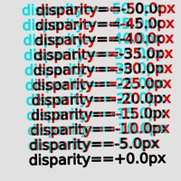 |
| parallax: 3d_space: ____step: | 0_to_50_pixels front_of_screen_ 3_pixels______ | 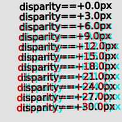 |
| parallax: 3d_space: ____step: | 0_to_50_pixels behind_screen_ 3_pixels______ | 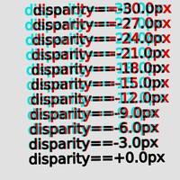 |
{kind=link}
{kind=link}
{kind=link}
{kind=link}
As detailed in Author's solution for red-cyan glasses, development of Anahald relied on viewing images through improvised red-cyan glasses made to have two layers of film-based filters, and viewing depth-charts in this section illustrates the reasoning perfectly.
The above depth charts reveal at least two-fold improvement in perceived depth-budget achieved by adding a second layer of color filters.
While a pedantic spectator would point at a detectable ghosting even with dual-layer glasses, the increased difference between the "good" and the "parasitic" signals prevent the latter from destroying stereo-viewing experience.
In the end of the day, the goal of stronger filters is to avoid annoyance from ghosting (cross-talk), for which eliminating parasitic signal completely is not necessary.
But the advantage in depth-budget comes at a cost of reduced perceived colorfulness. At the time of this writing the author has no method to estimate it.
Any way, images being seen through dual-layer glasses are far from being colorless. Moreover, so far nobody questions legitimacy of black-and-white photography :).
And the outstanding question is: how it comes that most red-cyan glasses are made for diminished depth-budget when it's so easy to improve?
The author's answer is that the "standard" glasses are perfectly usable for pictures made for smaller depth-budget, and even deliver better colors.
So, in practice, a stereo-photo should be made - shot and edited - while knowing the target viewing methods. And for each parameter, the resulting picture must stay compatible with the least capable method with regards to this parameter.
In the specific case of color anaglyphs, the trade-off is between the colorfulness and the depth. Sometimes visible ghosting could also be reduced by keeping bold outstanding objects - those that cause the most annoyance - close to the screen plane and thus having smaller disparity. Of course ability to do so depends on the composition of particular photo.
Author's solution for red-cyan glasses
The choice of red-cyan glasses to accompany Anahald development was based on two factors:
- Availability at a reasonable price
- the whole task of improving stereo-anaglyph colors is a contribution to sustainable stereo-3d photography - see http://www.dualcam.net/
- the author had to start thinking about group presentations of anaglyph photos, so purchasing, giving out, and potentially loosing relevant numbers of glasses should be affordable
- if the author happens to bring newcomers into the world of anaglyphs, usable glasses should be easily accessible to them as well
- the whole task of improving stereo-anaglyph colors is a contribution to sustainable stereo-3d photography - see http://www.dualcam.net/
- Ability to handle pre-existent stereopairs
- author's test-base for Anahald consists of approximately 360 stereo-photos; given the timing (2024 - shortly after the stereo-bum of 2000/2010-s), most of them are made to be viewed on 3DTV and thus relied on depth budget larger than many existent red-cyan glasses allow to fuse
- author's test-base for Anahald consists of approximately 360 stereo-photos; given the timing (2024 - shortly after the stereo-bum of 2000/2010-s), most of them are made to be viewed on 3DTV and thus relied on depth budget larger than many existent red-cyan glasses allow to fuse
Actually this section could have been named How to get away and achieve satisfactory quality with cheaper red-cyan glasses.
In order to keep the costs under control (satisfy 1), being Israeli citizen, the author had to rely on Chinese sellers due to abnormal shipment costs from US. But there was no single offer of red-cyan plastic-filter glasses on AliExpress - all are red-blue, red-green, some exotic combo-s, but no red-cyan.
The best available option were film-filter plastic-frame glasses.
And in order to handle pre-existent stereopairs without ghosting (satisfy 2), two layers of filters are needed.
The author followed a lazy approach of making stronger glasses out of two pairs - one is cannibalized by cutting its arms out, and its remaining front panel is attached to the front of the other (unmodified) pair. The author prefers to use a temporary glue - BluTack - to keep the second filtering layer as optional.
It's important to prevent large gap between the two filters, thus:
- the panel left from the 1st pair must be as flat as possible, with no parts protruding towards its back side
- only very small amount of BluTack is applied
The process is illustrated in the below table 2.
| Stage in the making | The image |
|---|---|
| The pair of glasses as is | 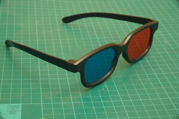 |
| Original glasses and front panel - separately | 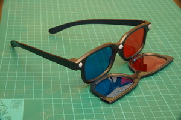 |
| Finally, glasses with 2nd filter panel attached at the front | 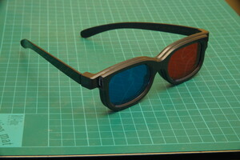 |
Examples of branded red-cyan glasses
For those either living in US or being ready to pay the shipment extra, there is a choice of ready made red-cyan glasses.
The table below shows some recognizable models that the author happened to own and test
| Model name | Filter strength | The image | Availability in 2024 |
|---|---|---|---|
| (Depth budget) | |||
| Proview | Lower | 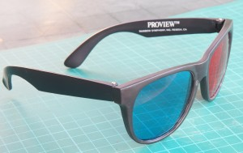 | Yes |
| Pro-X | Higher (the look on the photo here is misleading) | 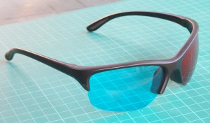 | Yes |
| Nvidia 3d-vision discover (this red-cyan version existed back in 2010-s) | Higher | 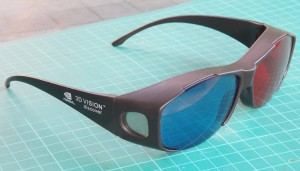 | No |
For his private stereo-photo editing the author does use "Pro-X" and "Nvidia 3d-vision discover" glasses; while the "Proview" ones spent last 15+ years in the drawer.
Reducing side light and reflections
During years of involvement in stereo-photography, the author learned a simple but extremely efficient tip:
- preventing light unrelated to the viewed picture from reaching the spectator's eyes is paramount to comfortable stereo viewing, no matter the method (anaglyph, polarized, etc.)
Frankly speaking, the author would never realize how in the world this rather obvious factor isn't taken into account by stereo-glasses' designers.
In the realistic environment - anything other than cinema screening - fighting side light and reflections includes four steps:
- avoid glossy screens and papers if possible
- really large pure black border around the picture, even at the price of loosing screen- or photo-paper area and viewed image resolution
- have some black shield attached to the glasses - around both the filters and the front parts of the arms
- adjusting display brightness and/or room illumination
Requirements (3) and (4) are the ones that need to be addressed.
Regarding the shield (or hood): The glasses come in various shapes, many even follow crazily irrelevant "aviator" style; most of them do nothing to protect from side light and/or reflections. The author is aware of only two designs that provide at least partial solution:
| Model name | The image |
|---|---|
| (fake?) Nvidia 3d-vision discover (red-cyan version of such glasses - see the table above used to exist back in 2010-s) | 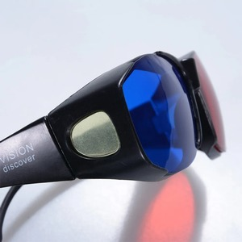 |
| Omega/Enciircle white-light projection system | 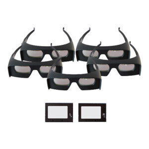 |
Regarding the reflections off the glasses' filters: these could be caused by both side-light and, especially with large screens, the picture itself. Maybe using multicoated filters for the glasses could prevent any reflections altogether, but the cost would be unimaginable. Still, better glasses are expected to bring improvement in this respect too.
The poor-man approach to fighting reflections is well known in general photography - lens hood that extends forward from the filter surface.
Ways of brightness adjustment
Related to both side-light and reflections is the balance between screen brightness and ambient illumination. Stronger shift towards screen brightness makes reflections more pronounced, while the opposite does so to the side-light.
- An accessible cue to excessive screen brightness is pulling down "gamma" - either of the display device, or of the image itself (sometimes at the expense of loosing a bit of shadow details). An in-between approach - without modifying image files - could be available if the chosen image-viewer application provides on-the-fly gamma correction (Irfanview does so on Windows).
- Sometimes the solution is to switch on the room light - computer displays aren't meant to be viewed in the darkness.
Another pitfall is that specific Anahald's color-LUT application by itself may make the picture brighter than it should have been. For example, out of HALDs included in Anahald distribution, the "ahg_oleg_sf" and "ahg_oleg_xc" are the ones whose high degree of correction increases perceived picture brightness. When preparing images for the Anaglyph HALD Generator Demo gallery, the author chose to routinely add gamma correction of 0.9 for all images made with these two LUTs.
Crafting glasses' shield at home?
The author's first attempt to DIY (do-it-yourself) the protection shield carved out of cardboard is shown below. While it's easy to break, and its efficiency leaves a lot of room for improvement, it still is a step in the right direction. E.g. spectator's experience with it being attached is noticeably better than with the same glasses without any protection.
| The shield is meant to be attached to the front of the glasses. So far it's glued to the frame surface by small tips of BluTac in the corners | 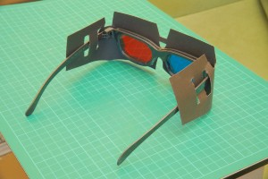 |
| Download link for cut-through (e.g. single-use) template for two copies of the shield. Align the dotted horizontal-axes line of the template with the center of A4-sized black cardboard, then cut. Try extending the upward-looking "tongues" even beyond the printable area; the larger they are, the better they shield | 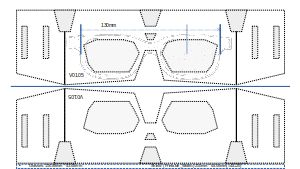 |
{kind=link}
Print the template while specifying print resolution explicitly. Do play with the print resolution until the shown dimension (distance between edges) matches the imprinted value (130mm).
The shield brings an apparent improvement; what it lacks though are filter hoods extruding forward from the shield's plane.
Out of the improvised solutions relying on off-the-shelf things, what worked the best so far, was just wrapping the hands tightly around the glasses to form a complete hood that extends both forwards and backwards from the filters' plane. The obvious downside - its utterly inconvenient.
The second best is placing a long black sock flat on top of the glasses. If it is long enough to hang down from both sides while reaching below the eyes, it provides a reasonable compromise between convenience and effectiveness.
The author would appreciate contribution of alternative suggestions, both in the off-the-shelf domain, and DIY. Such one could be published the way the contributor chooses - either as links from this site, or as additional pages.
Viewing on HDTV?
As with any photos, the best electronic screen for stereo images would be large and high-resolution. In practical terms this naturally leads to HDTV.
The author's experience definitely confirms this claim - if it works, it's the best. But there is a bold obstacle to overcome - unwanted picture optimizations.
Buried in the TV's setup/configuration options are numerous settings that, unless neutralized, alter the colors, and thus might re-introduce unwanted (e.g. unbalanced) RGB combinations.
Different TV models offer different picture-"improvement" capabilities and name these differently. On the positive side, some TVs organize picture options in several profiles providing for easy switching between whole sets of relevant settings. These profiles are typically named "Movies", "Natural", High-Contrast", "Photos", "Custom", and so on. The "Custom" one is the 1st candidate for tweaking here.
The below table mentions some common option names as they appear on the author's Philips TV, and their values proved as being suitable for viewing stereo anaglyphs.
| Option name | Preferred value for the option |
|---|---|
| Smart Picture | Photo |
| Contrast | 90 of 0…100 |
| Brightness | 50 of 0…100 |
| Color (Saturation?) | 50 of 0…100 |
| Sharpening | Zero/off, or the lowest possible; |
| leave it to the image-viewer application | |
| Noise Reduction | Zero/off, or the Lowest possible; |
| do post-process images themselves when needed | |
| Tint | Normal |
| PC mode | On |
| Light sensor | Off |
| Picture format | Unscaled |